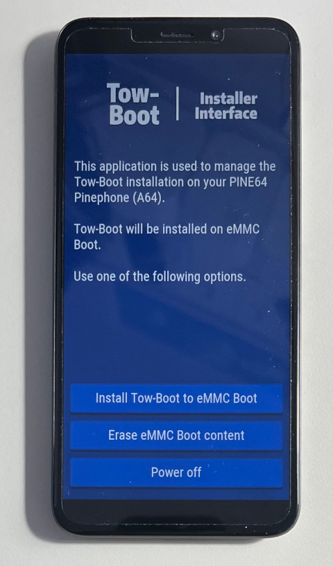
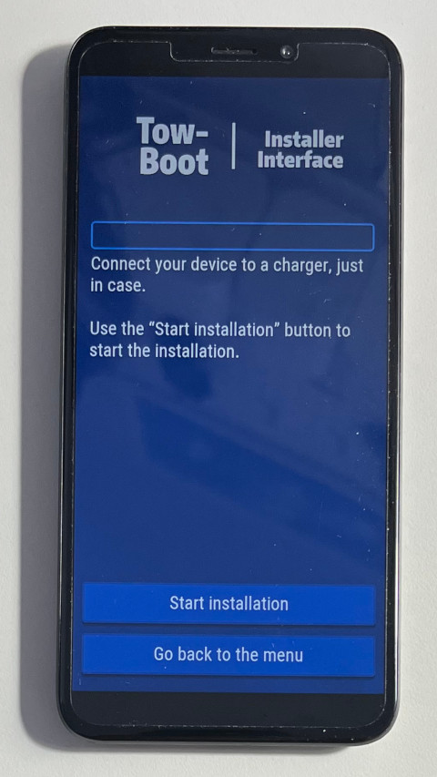
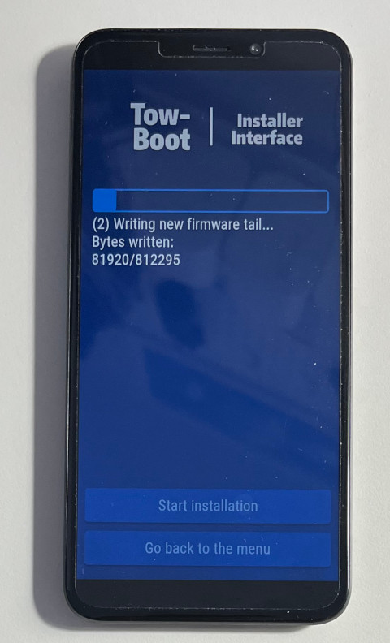
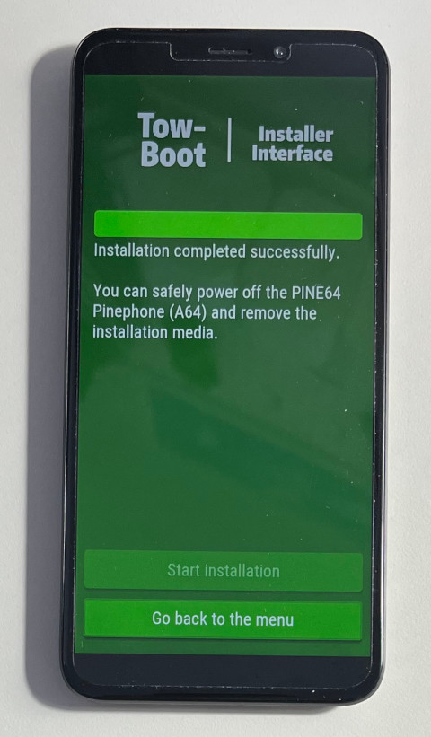

Steward
分享是一種喜悅、更是一種幸福
手機 - PINE64 PinePhone - 安裝Tow-boot
參考資料：
https://wiki.pine64.org/index.php/PinePhone
https://github.com/Tow-Boot/Tow-Boot/releases
https://ivonblog.com/posts/pinephone-tow-boot/
安裝Tow-Boot到eMMC後，只要按住上音量鍵開機，Tow-Boot就會將eMMC透過USB掛載成一個DISK(如：/dev/sdb)，接著，使用者就可以透過dd指令將系統燒錄到eMMC(不會覆蓋掉Tow-Boot本身)，Tow-Boot本身就是一個Bootloader，因此，也可以用來引導MicroSD系統開機，像Mobian系統就必須先安裝Tow-Boot才可以開機使用，Tow-Boot預設是從eMMC開機，如果要從MicroSD開機，只要按住下音量鍵開機即可
步驟如下：
$ cd $ wget https://github.com/Tow-Boot/Tow-Boot/releases/download/release-2021.10-005/pine64-pinephoneA64-2021.10-005.tar.xz $ xz -d pine64-pinephoneA64-2021.10-005.tar.xz $ tar xvf pine64-pinephoneA64-2021.10-005.tar $ sudo dd if=pine64-pinephoneA64-2021.10-005/mmcboot.installer.img of=/dev/sdX bs=1M $ sync
Install Tow-Boot to eMMC Boot

Start installation

安裝中...

完成
